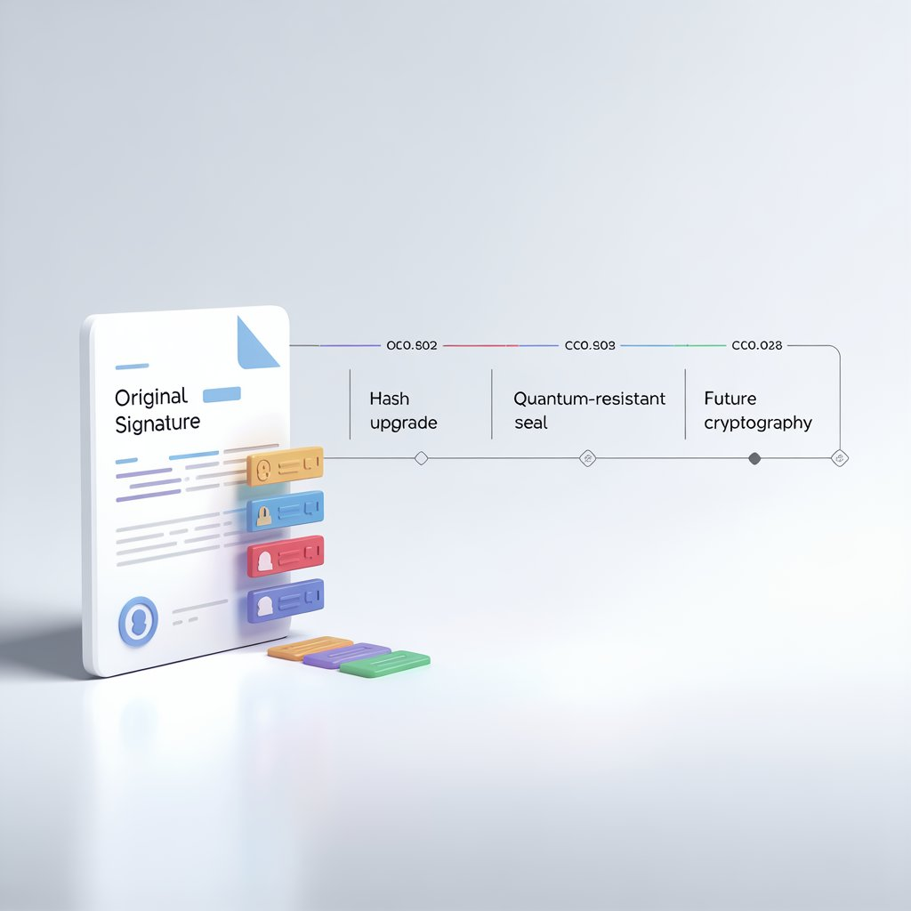

BrillSign's temporal infrastructure ensures your documents remain verifiable 30, 50, or even 100 years from today—independent of vendor availability or platform rot.
Standard e-signatures expire when the certificate chain breaks or the vendor changes platforms. BrillSign uses PAdES-LTV and ledger-anchored hashing to ensure validity exists within the file itself.
Decentralized storage prevents 404 audit trails.
Supports post-quantum hash upgrading.
As quantum computing threatens traditional cryptography, BrillSign's protocol allows for "Proof-Over-Proof" timestamping, resealing your legacy documents with quantum-resistant primitives without invalidating original signatures.

Technical insights into century-scale document integrity.